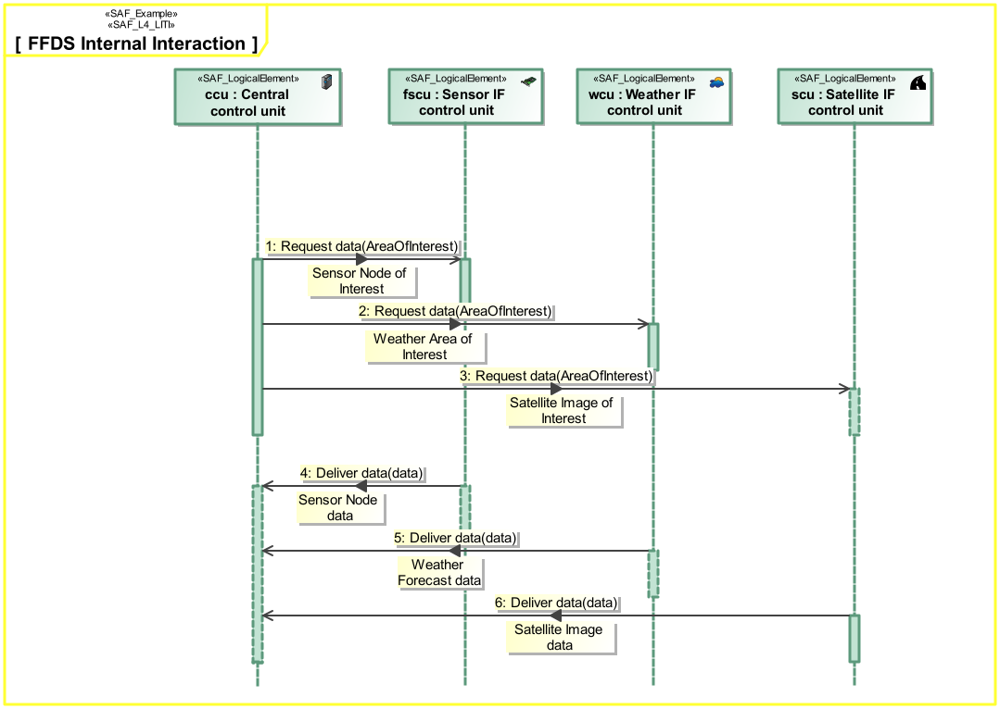
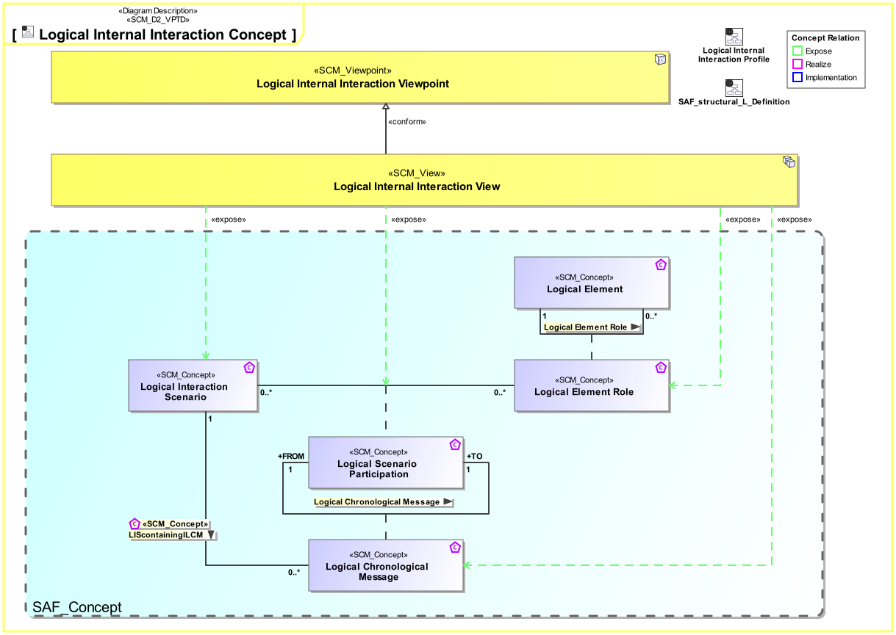
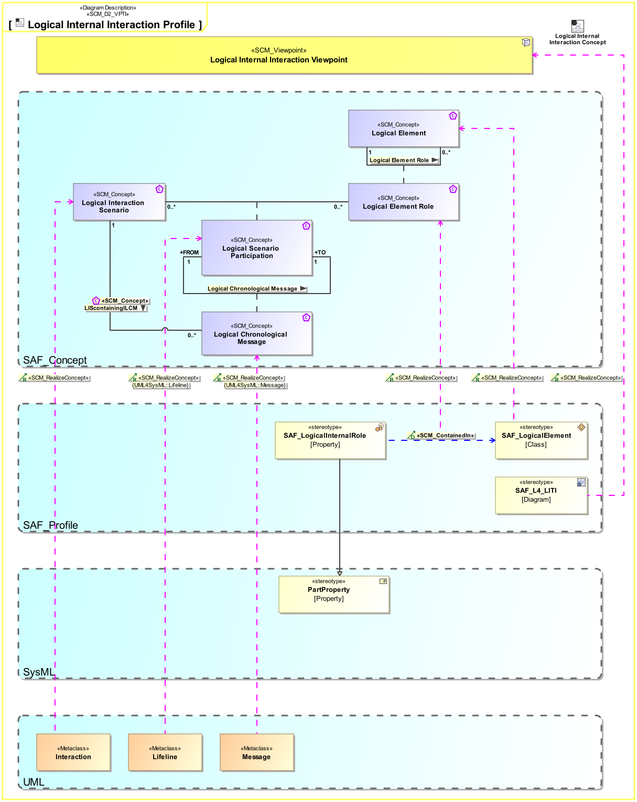

L4_LITI Logical Internal Interaction Viewpoint
| Domain | Aspect | Maturity |
|---|---|---|
| Logical | Interaction & Collaboration |

The Logical Internal Interaction Viewpoint describes System internal behavior based on the exchange between the Logical SOI Elements Usage. It depicts the sequence of interactions between the Logical SOI Elements and the exchanged Domain Item Kinds needed to accomplish a System Partial Function.
The Logical Internal Interaction Viewpoint supports the “Develop Architecture Viewpoints” and the “Develop Models and Views of Candidate Architectures” activity included in the “Architecture Definition process” activities of the INCOSE SYSTEMS ENGINEERING HANDBOOK 2015 [§ 4.4] and contributes to the System Architecture description.
A sequence diagram featuring the flow of control between Internal Logical Elements of the SOI. Note: This diagram depicts the sending and receiving of messages between the interacting entities called lifelines where time is represented along the vertical axis. The lifeline representatives are part properties typed by Logical System Elements.
The following Stereotypes / Model Elements are used in the Viewpoint:
The Diagram shows the concepts exposed by the viewpoint, and related concepts if necessary.

| Concept | Documentation |
|---|---|
| Logical Chronological Message | Ordered sequential occurrence of exchanges between Logical Interaction Scenario Participants. |
| Logical Element Role | Specifies the fact that a logical element comprises logical elements. |
| Logical Interaction Scenario | Ordered sequence of exchanges of information, energy, or material between Logical Interaction Scenario Participants. |
| Logical Scenario Participation | Specifies the fact that a Logical Element Role participates in a Logical Interaction Scenario. |
The Diagram shows the implementation of exposed concepts.

| Concept | Realization |
|---|---|
| Logical Chronological Message | |
| Logical Element Role | |
| Logical Interaction Scenario | |
| Logical Scenario Participation |